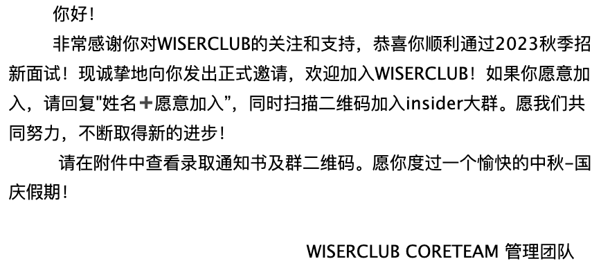

记Wiserclub录取
收到了录取邮件才放心来写，即便结束后就感觉十拿九稳。我第一志愿是机器学习，第二志愿Python。机组最多录取20人，候选人27个；Python最多录取26人，候选人41个。面试形式是多对多群面，但不是无领导小组讨论。第一志愿相同的五个候选人被分到同一场面试，第二志愿会有不同，但每个志愿的负责人都会来问问题。

机组这边问了三个问题
写出sigmoid函数（这个问题很多人不会，负责人就换了个问题，但我还是答了） \[ \sigma(x)=\frac{1}{1+e^{-x}} \]
写出线性回归的解析解（刚好前一天做机器学习作业的时候有用到，就复习了一下，运气好）
\[ \Theta = (X^TX)^{-1}X^TY \]
- 讲一个你熟悉的机器学习算法
我一开始说我就讲决策树，看学长有点不以为然，感觉确实有点简单，就说有一种决策树叫XGBoost。但XGBoost是GBDT的改进版，就不得不提到GBDT，最后就顺着讲了GBDT。虽然一开始思路有点乱，但讲的还不错，我讲清楚了迭代的思路，学长就说“ok好了好了”，接着他问了我个follow up question
- “这是Boosting还是Bagging？”
我思索片刻说Boosting（GBDT的全称就是Gradient boosting decision tree），学长给我竖大拇指，然后就再没问我问题了
印象里问其他人的问题还有“说几个激活函数”，其他就不记得
Python组的问题是：手写一段代码，提取字符串中的奇数位字符
我不记得判断字符串长度的代码是啥了，就随便写了个pd.str.length()，然后用个for循环，总之就瞎写（刚查了下正确写法是s.str.len()，s是字符串）
每次被认可都在增强我的自信。自从BEC那次被拒后一直在否定自己，感觉和金融学生比自己一无是处，但其实只是方向不同和阅历不够。从美国回来后感觉认知能力强了许多，也更能handle一些事情，放在以前是大事的，现在不痛不痒就过去了。BEC和XCC我都没申，因为不是我的菜，当然论能力我完全有资格进。这点在上学期我会否定，会想说“就算申了他们也不一定要”。但现在想，不要我 是他们的损失，他们的失误。而且一个学生社团搞这么elite风格，几百候选人只录取十几个，其实挺作的。社团的作用就是socialize，一类同好的聚会，现在人数上这样限制，其实是自毁根基，搞闭关锁国那套，没啥意思
有趣的是，有个化院的去年进了BEC，wiserclub一志愿python面试没过。不过他确实大佬啦，跨保了清华公共管理学的医院管理，复杂的背景，有趣